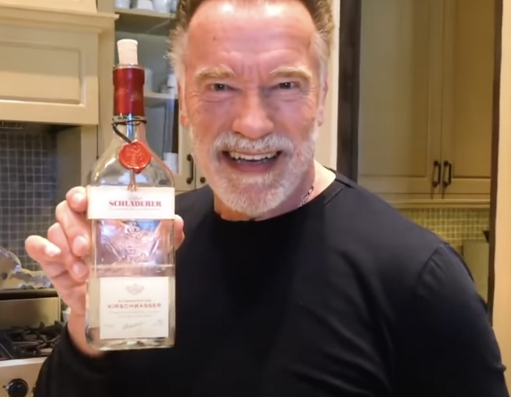

Most of you DWEEBS drink protien shakes and expect to double in size, unfortunately this is not the case most of the time. In this recipe I will highlight a key industry secret used for decades at the highest levels of professional sport. This is one you wont want to miss out on
You guessed it!
The secret ingredient is a dash of Peach Schnapps, this changes the chemical composition of the amino acids within the protiens and transforms it into BROTIEN which is key for muscle growth as brotien is absorbed into the bloodstream much faster than protien
Follow the simple steps below and you will be fighting with a T1000 in no Time!